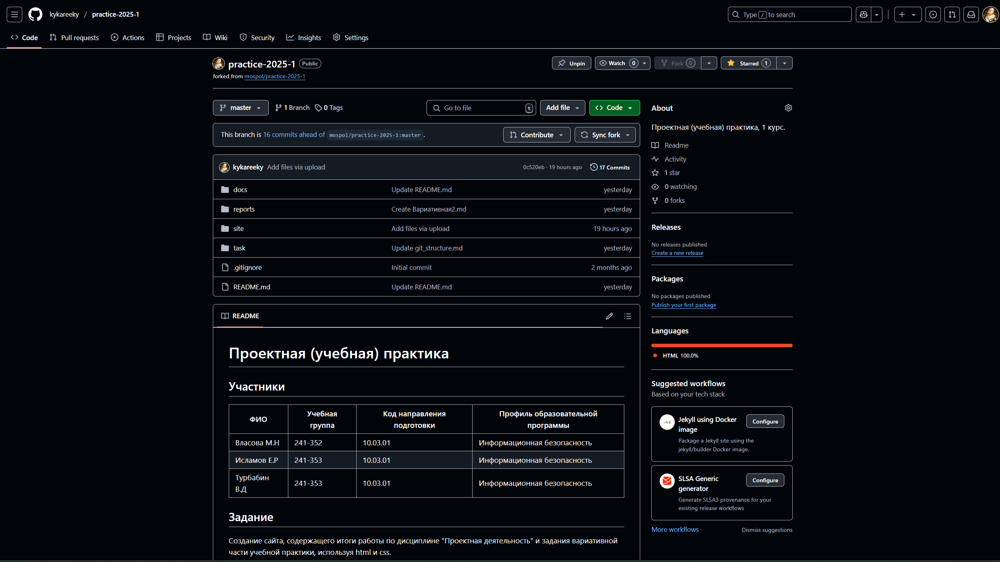
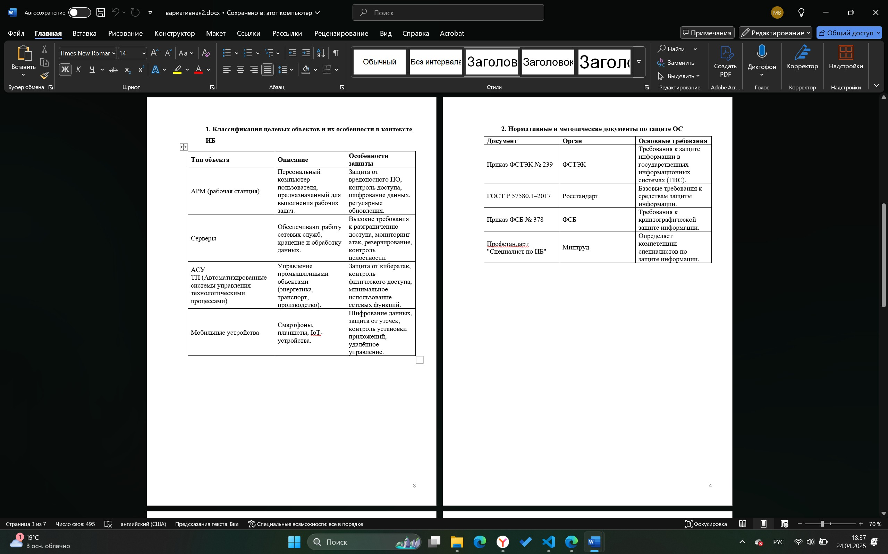
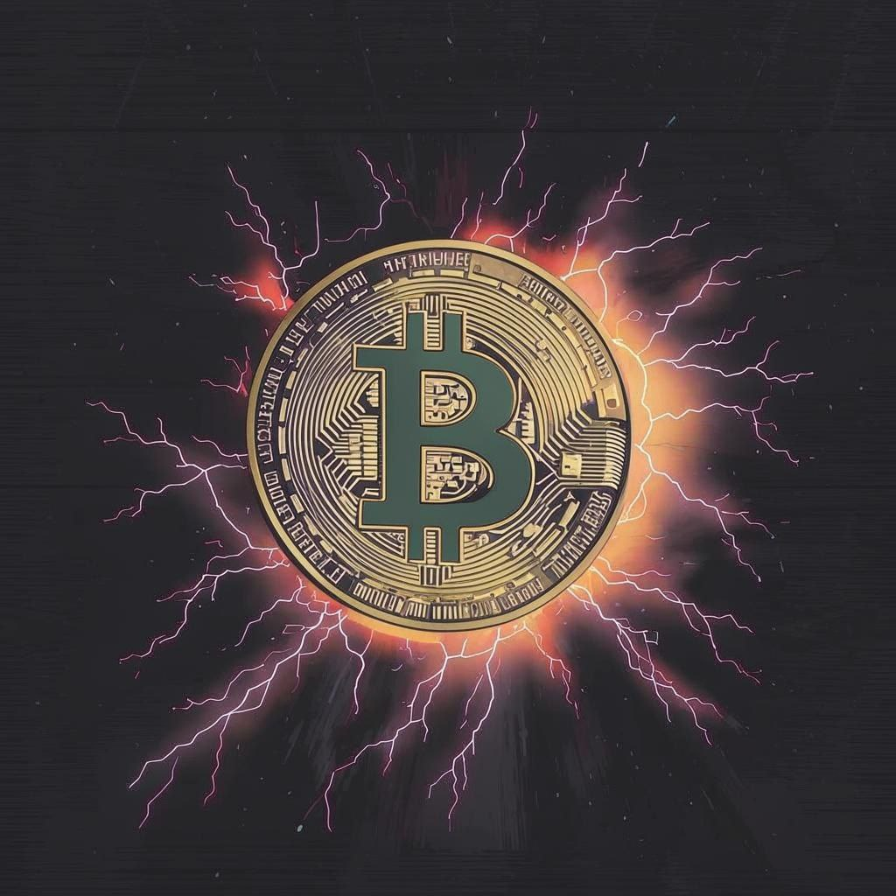

Аннотация проекта
Open Digital Cash – проект, посвящённый разработке ПО для использования цифровых наличных, позволяющего пользователям совершать быстрые, безопасные и низкозатратные транзакции.
В рамках этого проекта, наша группа создаёт сайт, служащий точкой входа для новых участников сообщества, предоставляя базовую информацию о технологии ODC:
- Принципы работы блокчейна.
- Особенности мобильного приложения.
- Роль защищенных SIM-карт в экосистеме.
Сайт уже доступен на GitHub Pages и будет обновляться по мере развития проекта.
О проекте
Open Digital Cash (ODC) — это инновационный проект, направленный на создание безопасной и эффективной системы цифровых наличных. Разработанный командой студентов Московского политехнического университета, проект объединяет передовые технологии, включая собственный блокчейн на Python, мобильное приложение на Kotlin и доверенное аппаратное обеспечение на базе SIM-карт.
Ключевые особенности
- Децентрализованная архитектура: блокчейн ODC обеспечивает прозрачность и надежность транзакций.
- Безопасность: криптографические алгоритмы (SHA-512, RSA-4096) и интеграция с NFC для защищенных платежей.
- Удобство: мобильное приложение с интуитивным интерфейсом и поддержкой P2P-переводов.
- Регуляторная совместимость: соответствие требованиям финансовых стандартов.
Этапы разработки
- Серверная часть на Django с API для обработки транзакций.
- Функционал NFC для бесконтактных платежей.
- Статический сайт (GitHub Pages) для представления проекта.
ODC — это шаг к будущему цифровых финансов, где скорость, безопасность и доступность становятся стандартом.
Журнал практики
Пост 1: Учебная практика: базовая часть
Мы создали репозиторий на github, в нём оформили все материалы проекта в формате Markdown, создали сайт который вы сейчас читаете с помощью HTML и CSS. Это заняло около 32 часов: 5 на GitHub, 5 на написание документов в Markdown, 14 часов на работу с HTML файлом и 8 часов на CSS.

Пост 2: Учебная практика: вариативная часть
Задание: "Анализ требований к защищенности ОС в зависимости от целевого объекта"
Мы разбирались, как защищать разные типы компьютеров и систем (рабочие станции, серверы, АСУ ТП, смартфоны) в зависимости от их уязвимостей. Изучили госстандарты (ФСТЭК, ФСБ), сравнили требования к защите для Windows, Astra Linux и Android.

Журнал проекта
Пост 1: Влияние санкций на криптовалюты в России
Санкции против России оказали значительное влияние на различные сферы экономики, включая крипторынок. (В 16 пакете санкций 13 российских банков отключили от swift; в 8 пакете россиянам запретили иметь криптовалюту на европейских кошельках) С одной стороны, ограничения на традиционные финансовые операции подтолкнули россиян к использованию криптовалют как альтернативного способа сохранения и перемещения средств. Биткоин, Ethereum и другие цифровые активы стали инструментом для обхода санкций и защиты сбережений.С другой стороны, санкции ужесточили регулирование криптовалют со стороны государства. Российские власти активно обсуждают введение правил, ограничивающих использование криптовалют для расчетов внутри страны, но при этом разрешить их применение в международной торговле. Это создает неопределенность для инвесторов и майнеров, вынужденых адаптироваться к быстро меняющимся условиям. Санкции стали как вызовом, так и возможностью для крипторынка в России.
Пост 2: Энергетика и экология криптовалют: международные инициативы
Рост криптоиндустрии сопровождается увеличением энергопотребления. Это вызывает значительные экологические проблемы, стимулируя страны и индустрию искать решения через международное сотрудничество и "зеленые" инициативы. На климатическом саммите COP26 обсуждалось влияние майнинга на экологию. США, Канада и ЕС, начали разрабатывать стандарты мониторинга энергопотребления криптоопераций. Китай, лидировавший в майнинге, запретил его, перераспределив мощности в регионы с возобновляемой энергетикой, такие как Северная Америка и Скандинавия. Crypto Climate Accord объединяет компании и регуляторов для достижения нулевого уровня выбросов CO₂ к 2030 году. Многие проекты переходят на энергоэффективные алгоритмы, например, Ethereum перешел с PoW на PoS, сократив энергопотребление на 99%. В Исландии и Канаде майнинг использует геотермальную и гидроэнергию, минимизируя экологический ущерб.
